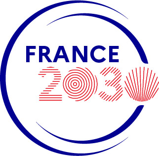
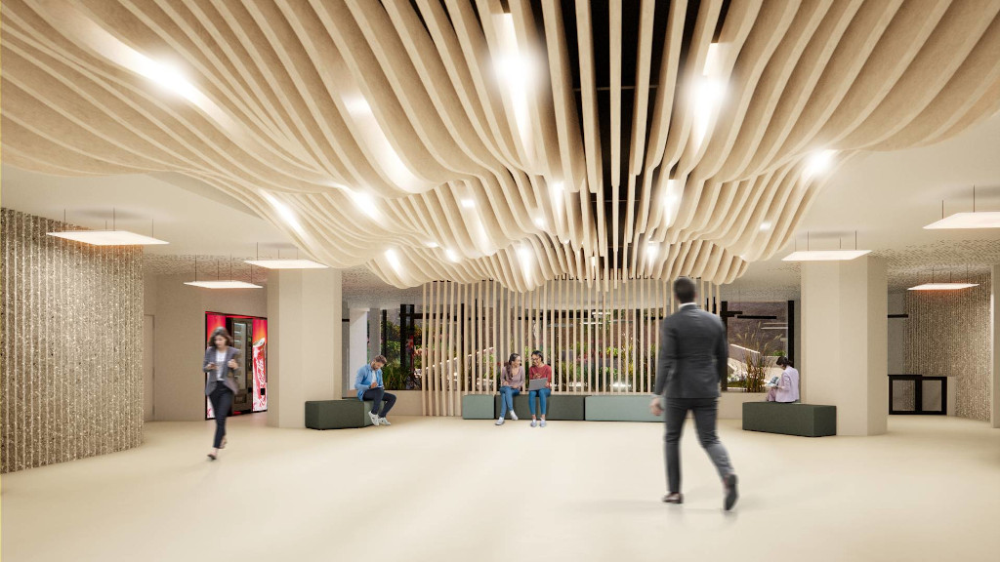

Citoyens tirés au sort, parlementaires, société civile : près de 80 personnes délibèrent avant la présidentielle 2027 pour répondre à la crise démocratique.
Fragmentation politique, polarisation du débat public, défiance citoyenne : les compromis deviennent difficiles, les institutions se fragilisent. Face à ce constat, des citoyens, des chercheurs et des associations agissent ensemble pour imaginer la démocratie de demain.
La Convention Citoyenne pour la Démocratie s’ouvre en septembre 2026 pour travailler à des préconisations concrètes, adressées aux candidats à l’élection présidentielle de 2027.

Un projet soutenu dans le cadreUne convention citoyenne réunit des personnes tirées au sort pour délibérer sur une question de société. Celle-ci va plus loin : pour la première fois en France, elle associe citoyens, parlementaires et société civile.
Blocages institutionnels, défiance citoyenne, fragmentation politique : l’innovation démocratique comme réponse.
50 citoyens tirés au sort, 11 parlementaires transpartisans et une vingtaine de membres de la société civile.
Pour la première fois, citoyens et élus délibèrent ensemble pour imaginer le futur de la démocratie.
La fabrique de la décision publique, l’équilibre des pouvoirs, la représentation politique.
Le samedi et le dimanche, de septembre à décembre 2026. Un travail itératif, session après session, qui se construit pas à pas.
Des préconisations remises aux candidats à l’élection présidentielle pour nourrir le débat public.
Le panel mixte de la Convention rassemble des expériences qui se croisent peu dans le débat public. Cette composition permet de construire des recommandations légitimes et largement appropriables.
Sélectionnés sur 7 critères socio-démographiques. Contactés par téléphone, libres d’accepter.
Un membre désigné par chacun des groupes de l’Assemblée nationale.
Une vingtaine de personnes, issues notamment du Conseil Économique, Social et Environnemental (CESE).
La Convention se tient sur quatre week-ends, le samedi et le dimanche, dans la même ville, pour permettre une construction continue des propositions.

À l’issue des quatre sessions, la Convention publiera les préconisations des participants pour renforcer la démocratie de demain. Ce document sera remis aux candidats à l’élection présidentielle.
Ces propositions seront diffusées auprès de tous les Français par différents moyens : soirée télévisée, presse, publications scientifiques… avec l’appui de fondations, d’associations, de « think tanks » et d’ambassadeurs citoyens.
La Convention Citoyenne pour la Démocratie s’inscrit dans le projet de recherche DemoCIS, lauréat d’un programme France 2030 réunissant des centaines de chercheurs.
Projet de recherche sur 7 ans réunissant 4 universités, 3 IEP, le CNRS, Inria, l’Institut Mines Télécom. Des centaines de chercheurs de plus de 10 disciplines. Découvrir DemoCIS →
Céline Braconnier, Sandrine Lévêque, Julien Talpin (CNRS, coordinateur), Morgane Fleury, Agnès de Geoffroy.
Squada conduit le tirage au sort téléphonique des citoyens. Missions Publiques anime les sessions et conçoit le processus délibératif.
La Convention bénéficie de l’appui d’un comité d’accompagnement réunissant fondations, associations et partenaires engagés pour le renouveau démocratique. (Logos et noms des soutiens à intégrer.)